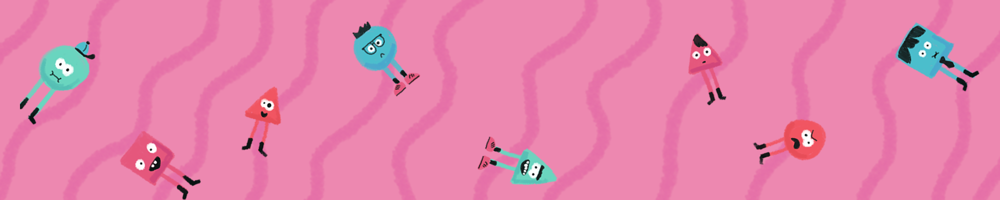
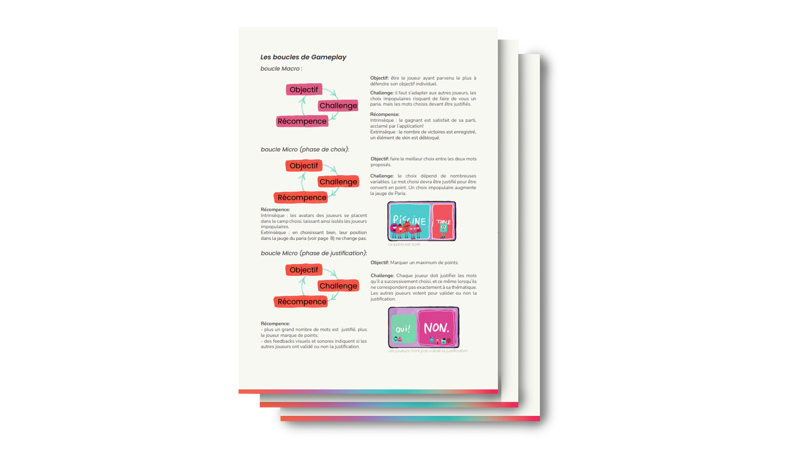
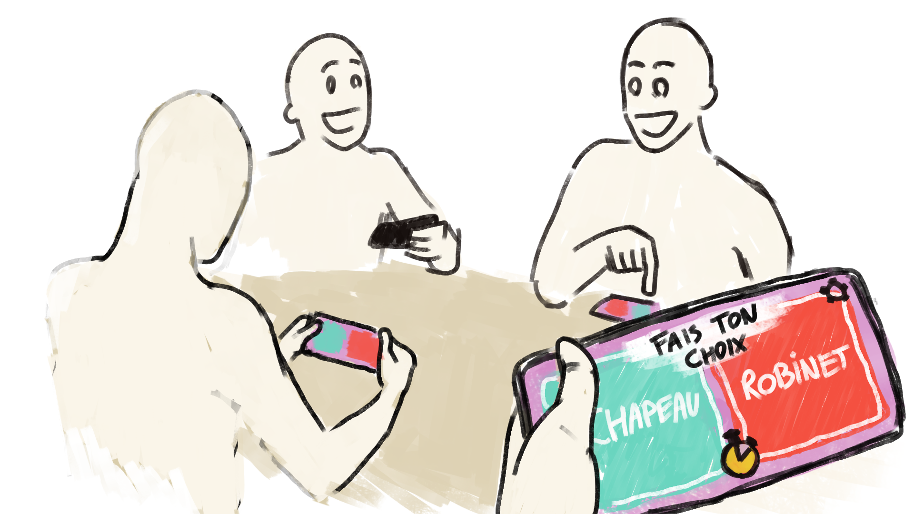
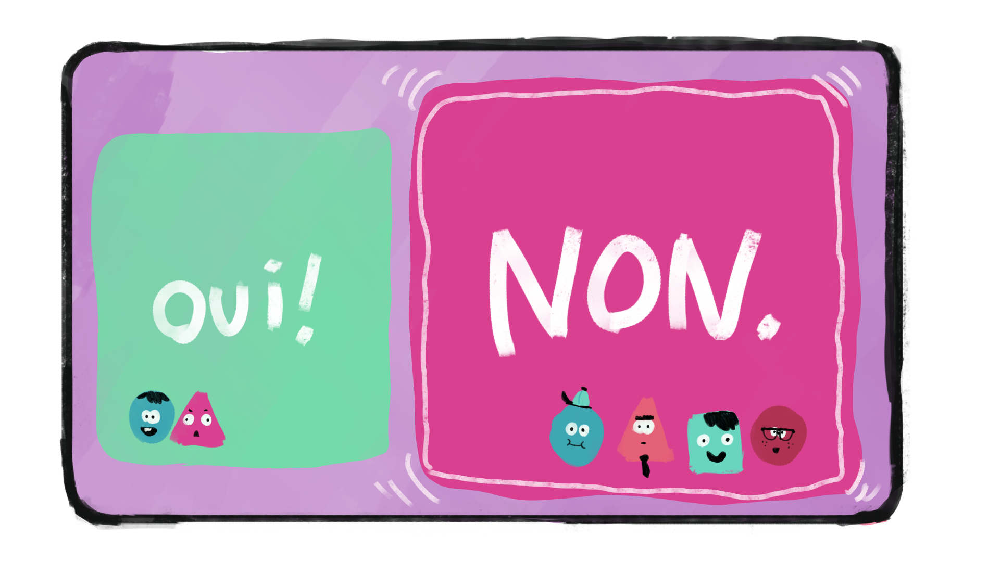
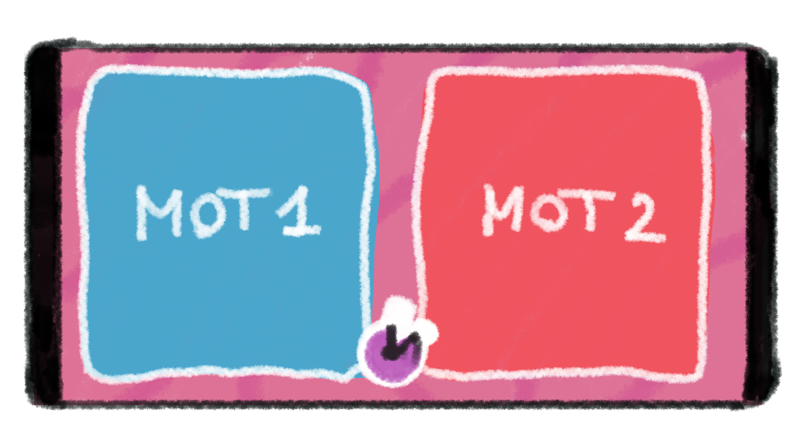
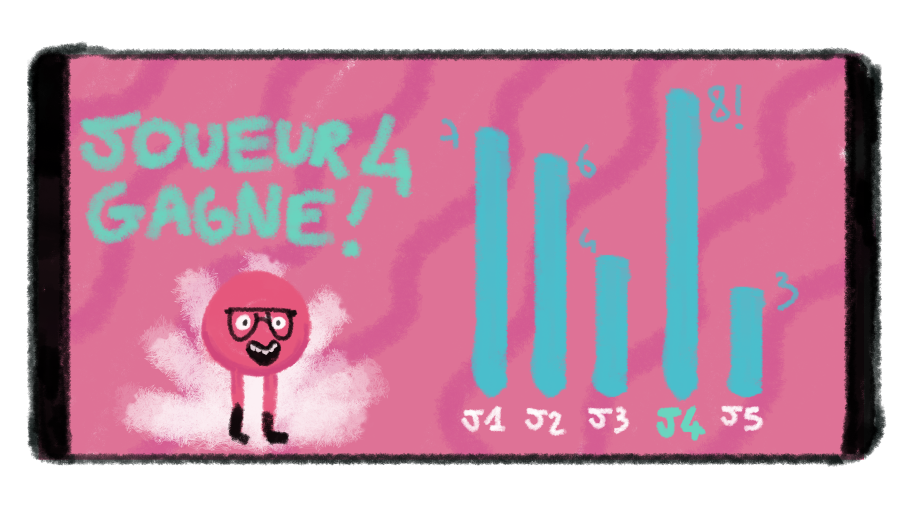
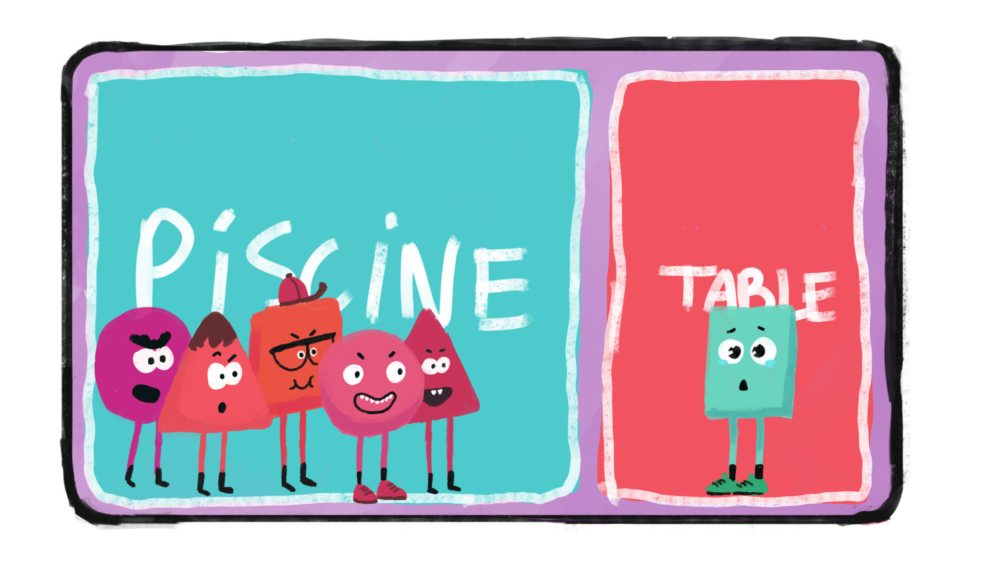
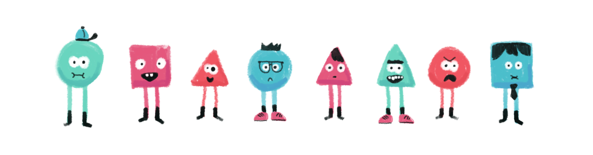

Jeu du paria
Un party game hybride
Pour ma candidature au CNAM ENJMIN, j’ai eu à concevoir un jeu centré sur le principe de conformisme social. J’ai donc entièrement conçu un “party game”, pensé pour être joué avec un smartphone, et j’ai rédigé son Game Design Document.

Le conformisme social
La vidéo de référence met en scène l’expérience de Asch, mettant en évidence le concept psychosociologique du conformisme social.
Il s’agit du processus poussant naturellement les individus à imiter un groupe afin de s’y intégrer.
Ce processus engendre plusieurs effets. C’est un puissant mécanisme de cohésion sociale,
mais qui a cependant également pour effet de faire perdre à chacun son individualité.
Deux notions s’opposent clairement: la singularité et le regard du groupe.
Ressentir la pression du groupe
Le “jeu du paria” est un jeu d’ambiance pour support mobile comparable aux applications. Cette expérience ludique met au défi les joueurs de défendre leur objectif individuel tout en prenant en compte le regard des autres, tout ça dans une ambiance fun et décalée.

Un thème est attribué à chaque joueur. Lors de la première phase du jeu, des mots vont leur être proposés.
Il devront sélectionner ceux de leurs choix, avec pour objectif, en fin de partie, de justifier en quoi
ces mots s’incluent dans leurs thèmes. Cependant les mots choisis doivent également être sélectionnés
en fonction d’une autre variable: le choix du groupe. Lorsqu’un joueur est seul à choisir un mot,
sa “jauge de paria” augmente et il perd des points. Il est donc intéressant d’analyser les actions
des autres participants, afin d’anticiper leurs réponses et ainsi éviter de devenir le paria!
J’ai théorisé l'expérience utilisateur et décrit plus en détail le gameplay dans le GDD. N’hésitez pas à le consulter!
Jovial, absurde, mesquin
Le jeu du paria met en évidence une mécanique sociale profonde avec humour et légèreté. L’univers du jeu se veut jovial, absurde, mesquin, jouant de ce décalage entre le sujet et l’ambiance.
J’ai fait des recherches pour proposer une esthétique basée sur ces trois enjeux: diversité, dynamisme et synthétisme. Les formes géométriques et l’association de nombreuses couleurs vives me permettent d’exprimer visuellement le fond de mon expérience.





Documentation, idéation,
sciences humaines
Techniquement, ce projet est un très bon entraînement à l’idéation rapide et la création de documents riches sur un temps court. Celui-ci m’a également fait entrevoir le potentiel de se référer à des sujets spécifiques aux sciences humaines pour alimenter des concepts de jeux.
Année • 2024
Durée • 1 semaine
Contexte • personnel
Groupe • solo
Outils • Photoshop